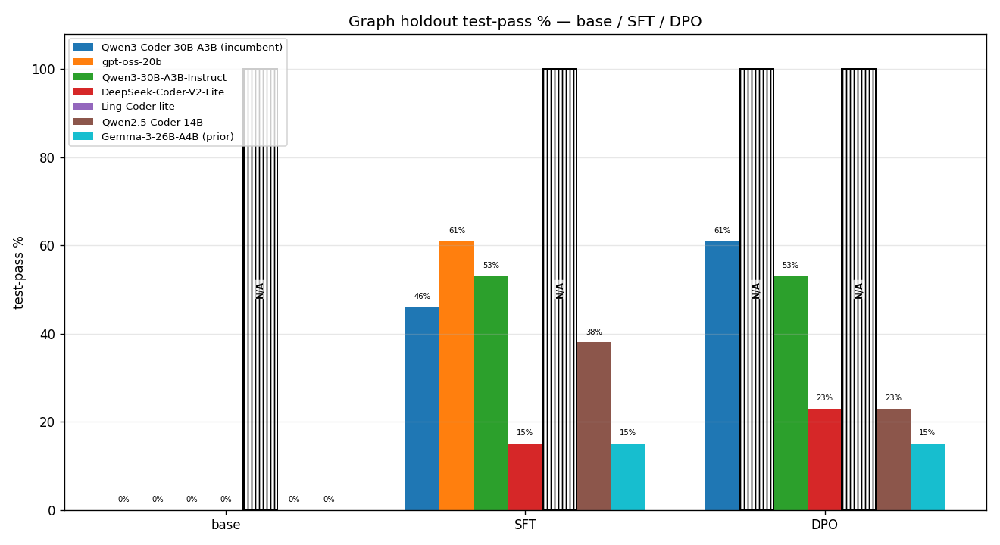
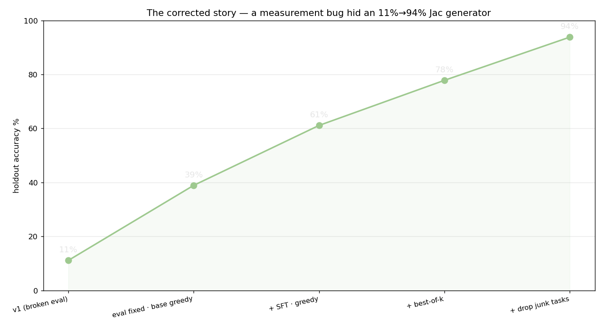
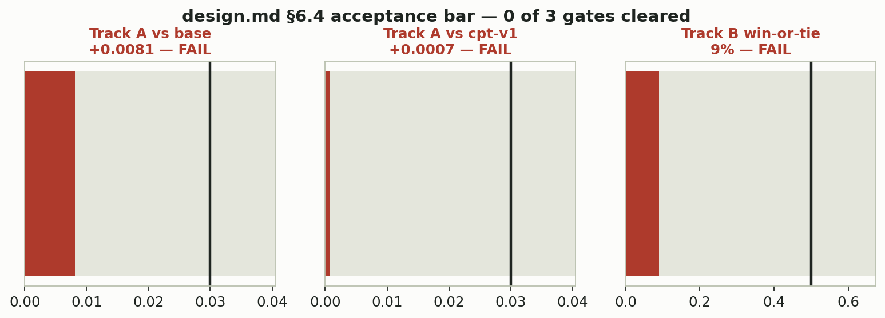

Blog 4 of 4 on the model work behind Jac Model Studio. The other three go deep on continual pretraining, layer selection, and the app. This one is the map: what we're trying to do, everything we've tried, and where it stands as of early August 2026.
We work on Jac. It has a compiler, users, and an idiom (node, edge, walker, visit) with no equivalent in Python or TypeScript. It also has the problem every young language has: no coding model knows it.
Ask a stock 30B coder to write a Jac walker and you get confident nonsense, something that looks like Jac from a distance and compiles into nothing. Our earliest measurement is still my favorite number in the repo: the fresh base model, asked to solve 150 held-out Python-to-Jac conversion tasks, produced zero programs that ran. Not a low score. Zero.
So the bet: a fine-tuning pipeline, continual pretraining into supervised fine-tuning into preference tuning, that turns a general coder into a Jac specialist. On one Mac, because that's the machine we have. An M5 Pro with 48GB of unified memory, MLX, LoRA, everything quantized to 4 bits.
The hard part was never "can we train something." It's finding the recipe that works, when almost every step in the standard playbook turns out to be an assumption nobody checked. Checking them is what model-experiments/ is.
We started on Qwen3-Coder-30B-A3B-Instruct for boring reasons. Apache-2.0, coder-pretrained, and a mixture-of-experts design (~3B active parameters per token) that is one of the few 30B shapes trainable at all on 48GB. Dense models that size OOM at iteration 1, every config, every time.
But "we picked it because it fits" isn't a decision, it's an accident. So on 2026-06-26 we ran a bake-off: five candidates plus the incumbent through an identical pipeline, one variable changed.

Two holdouts. Plain functions, where everybody lands between 92% and 95% after SFT, a wash. And a 13-task graph holdout built around Jac's spatial idiom, which is where the field separates. The incumbent goes 0% → 46% after SFT → 61% after DPO. DeepSeek-Coder-V2-Lite tops out at 23%. Qwen2.5-Coder-14B regresses under DPO, 38% → 23%, and runs at 16 tok/s, roughly four times slower than the MoE candidates.
Two candidates failed for reasons unrelated to learning. gpt-oss-20b picked up the idiom better than anything else in the field (graph SFT 61%) but its MXFP4 weights break mlx_lm.fuse at any precision. Ling-Coder-lite never scored at all, because its BailingMoE architecture emits 512 tokens with no EOS.
Verdict: nobody beat the incumbent by more than run-to-run noise, so the incumbent stays. A boring result on paper. It also turned an assumption into a measurement, and no phase since has had to re-litigate the base model.
Next question: can reinforcement learning push past what SFT gives you? We had a compiler, which is a free and completely unambiguous reward function. Either the generated Jac runs or it doesn't. Better setup for RL than most people get. We built GRPO on it, then spent about three weeks producing beautifully flat numbers.
Two real bugs came out of that. The σ=0 trap, where every rollout in a group fails identically, GRPO's (reward − mean) / σ divides by zero variance, and no gradient flows at any learning rate. And the splice bug, where our task template's hole sat inside the code unit models emit, so splicing produced uncompilable nested Jac regardless of the model's answer.
The σ=0 fix is a dense similarity term carried into every reward tier, so two rollouts that both fail still land on different numbers and the group has something to normalize. Tier ceilings stay strictly below the next tier's floor, so a correct terse answer can never be outscored by a wrong verbose one (model-experiments/02-rl-grpo/rl/reward_logic.jac:175-192):
# sim: difflib ratio to the STRIPPED gold body (refbody_for stores it with its
# leading indentation, but extract_jac strips the completion -> strip both so
# the canonical body scores ~1.0 against itself). Present in every tier so a
# group of all-failing rollouts still has variance -> breaks the sigma=0 trap.
ref = refbody_for(task_id).strip();
sim = difflib.SequenceMatcher(None, body, ref).ratio() if ref else 0.0;
# Monotone tiers: exact pass dominates everything; each tier ceiling < next floor.
if runs and out.strip() == expected.strip() {
return 1.0;
}
if runs {
return round(0.40 + 0.25 * output_score(out, expected) + 0.15 * sim, 4); # <= 0.80
}
if compiles {
return round(0.20 + 0.15 * sim, 4); # <= 0.35
}
return round(0.15 * sim, 4); # <= 0.15
We fixed both. The numbers stayed flat across 30 ladder cells. On 2026-06-28 we declared RL a dead end. That verdict was wrong, and the reason is the most useful thing this phase produced.

The eval script and the GRPO reward function shared one text-extraction helper, and that helper had a third bug in it: a structural ~3.5× undercount, nothing to do with model capability. The models were echoing the entire driver file back at us, and the extractor unwrapped the first brace pair it saw, which was the module docstring. Worse, the reward function imported that same helper, so every RL run had spent its life training against a partly garbage signal.
The fix is to brace-match the specific unit the task punched a hole in, rather than trusting the first pair of braces (model-experiments/02-rl-grpo/rl/eval_rl.jac:85-96):
def unit_body(code: str, name: str) -> str {
# Brace-match the body of unit `name` out of `code` (which may be the whole
# echoed driver). Returns "" if not found. This is the real extractor: the model
# reproduces the entire driver, so we must pull THIS unit's body, not blindly
# unwrap the first/last brace pair (which grabbed the docstring -> ~4x undercount).
if not name {
return "";
}
m = re.search(r"(?:def|can|walker|node|obj|edge)\s+" + re.escape(name) + r"\b[^{]*\{", code);
if not m {
return "";
}
Fixed and re-measured on the same n=18 holdout: base greedy 11.1% → 38.9%, SFT peaking at 61.1% at rung-20, and sampling eight candidates and keeping the first one the compiler accepts got us to ~78%, or 94% on a 16-task subset with two memorization-rewarding tasks removed.
RL itself: even after the ruler was fixed, GRPO on top of a working SFT policy added nothing measurable. That lines up with Yue et al., who argue RL sharpens sampling inside a model's existing capability boundary rather than pushing the boundary outward, though our claim is much narrower than theirs: LoRA-GRPO at this scale, on this hardware, didn't beat SFT. The transferable lesson is the other one. Verify the grader before you trust a null. A convincing flat line can be a broken ruler.
Stage one of the pipeline is CPT: keep training on raw domain text with the original next-token objective, no task format, just prose. The theory is that it teaches vocabulary and concepts so the supervised stage starts from a better place. CPT-v1 (July) dropped validation perplexity 34% and gave us no way to tell whether that meant understanding or style mimicry.
CPT-v2 (finished 2026-07-18) was the serious attempt. A curated 2,406,676-token corpus, documentation-dominant, dropping 2,550 of 10,157 raw chunks. Twelve legs under one cosine decay, with zero catastrophic-forgetting regressions. Train loss fell 82%, validation loss 43%. Then it failed its own acceptance gates.

Zero of three. The semantic-similarity margin against the base was +0.008 where +0.03 was required. Against CPT-v1: +0.0007, a coin flip. And a blind pairwise judge, comparing CPT-v2's answers to a retrieval-grounded oracle's over 100 questions, gave it a 9% win-or-tie rate against a required 50%: 91 losses, 7 wins, 2 ties.
The judge's written reasons are the useful part. CPT-v2's losing answers kept inventing things: Cypher syntax, Gremlin, fabricated constructs like node.add_child(), and in a few cases answering a Jac routing question as though it were Next.js. It had absorbed the style of Jac documentation without the facts, which is exactly why we built the blind judge alongside the similarity metric. Cosine similarity happily rewards a confident, well-shaped, wrong answer.
We wrote it up as rejected, reading the root cause as a structural limit of next-token pretraining on documentation prose rather than a botched run. And then we used it anyway, because whether a checkpoint makes a decent foundation is a separate question from whether it passes a semantic benchmark. That's phase 04.
The current phase asks two questions at once, crossed against each other.
Does CPT help downstream? Datagen finished 2026-07-22: 9,608 SFT examples and 826 preference pairs, frozen and MD5-verified byte-identical across arms, 0% contamination against an 855-row holdout where a task passes only if the generated code runs and produces the right output.
Does it matter which layers you train? That one came out of noticing that mlx_lm's num_layers: 16 silently resolves to for l in model.layers[-max(num_layers, 0):], the last sixteen blocks, because slicing the end of a list is the simplest thing a library can do. Arcee's Spectrum method picks sixteen by signal-to-noise ratio instead. Same rank, same 281,837,568 trainable parameters, different placement.
Rather than patch .venv/, we reuse every other line of the upstream function verbatim and swap exactly one statement, so a future mlx_lm release shows up as a diff instead of being silently overridden (model-experiments/04-cpt-sft/sft_fresh_probe/spectrum/spectrum_lora_layers.py:267-276):
for l in model.layers:
l.apply_to_modules(get_keys_for_lora)
# --- end verbatim -----------------------------------------------------
# THE ONE CHANGED STATEMENT: explicit indices, not model.layers[-n:]
for i in ids:
l = model.layers[i]
lora_layers = [(k, to_lora(m)) for k, m in l.named_modules() if k in keys]
if lora_layers:
l.update_modules(tree_unflatten(lora_layers))
Four arms done, all on that same holdout, all directly comparable:
That last line is the honest, annoying one, and it's why arm 5 exists.
Arm 4 has a confound baked into it. CPT-v2 was trained on the trailing sixteen blocks; Spectrum's picks overlap only eleven of those, so building arm 4 required a union-and-freeze merge across 21 blocks. Its null result might mean "Spectrum genuinely doesn't help after CPT," or it might just mean "we glued two mismatched layer sets together."
Arm 5 removes the confound by re-running CPT itself on Spectrum's exact picks, so CPT → SFT → DPO becomes one continuous sixteen-block lineage with no merge step anywhere. That kills a bug class too. Building arm 4 surfaced an MLX issue where mx.load() returns a lazy memory map, and writing the merged result back to the same path truncated the mmap those arrays were still reading from, silently zeroing every trained key. Arm 5 has nothing left to merge.
As of 2026-08-03 22:07 EDT, arm 5 is paused, deliberately, one minute into leg 1 of 12. It didn't crash. What's green:
All five stale-path bugs were the same species: hardcoded roots that rotted when 03-new got renamed to 03-cpt-only, in code nothing had run since. In cf_check/run_cf_check.py:21 the root was one level short, so models/qwen-q4 resolved inside model-experiments/ and simply wasn't there. The rule now is that no path index gets trusted, only asserted (model-experiments/03-cpt-only/cpt_train/spectrum/run_cpt_leg_spectrum.py:28-34):
SELF = Path(__file__).resolve().parent # .../03-cpt-only/cpt_train/spectrum
CPT_TRAIN = SELF.parent # .../03-cpt-only/cpt_train
REPO_ROOT = SELF.parents[3] # repo root
# SELF is the spectrum DIRECTORY (Path(__file__).resolve().parent, not .../parents[N]
# off Path(__file__) itself), so parents[0]=cpt_train, [1]=03-cpt-only,
# [2]=model-experiments, [3]=repo root. Asserted, not trusted:
assert (REPO_ROOT / "models" / "qwen-q4").exists(), f"REPO_ROOT misresolved: {REPO_ROOT}"
Its sibling run_epoch_loop_spectrum.py needs parents[4] for the identical concept, because it counts from the file rather than the directory. One assert costs a millisecond and turns that into a startup failure instead of a surprise partway through a multi-day run.
The real run launched cleanly, then got killed on purpose before any checkpoint was written, for an unglamorous reason. Traversing all 48 blocks measures 1.59× slower than CPT-v2's pace, putting the CPT stage alone at 26 to 30 hours and the full chain at 37 to 41 including SFT, DPO, and evals. That's a multi-day window on the one machine that runs everything else. The loop is resumable by construction, so it can go in chunks; a kill costs at most the in-flight leg.
Finish arm 5, then run the six pre-registered z-tests (arm 5 vs arm 2, arm 5 vs arm 4, at each of SFT, DPO-best, DPO-final). The plan commits in advance to what each outcome licenses as a conclusion, so the reading can't be picked after the fact. That includes the case where the forgetting gate fires early, which we'd report as a finding rather than work around.
After that, phase 05 sits scaffolded and empty: the GRPO stage the original four-stage architecture specified and no phase ever ran, this time on a real SFT policy and a grader we know how to trust.
We started at zero programs that run. We're at 74.7% on a holdout where the only way to pass is to execute correctly. Most of what got us there was finding out which of our assumptions were wrong, and the one still open is sitting at leg 1 of 12.
Every doc, every result, every rejected checkpoint is in model-experiments/.